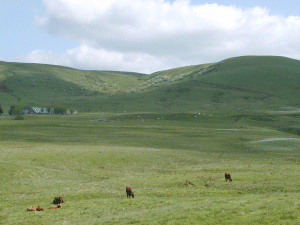
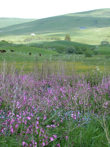
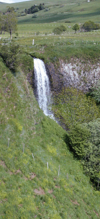
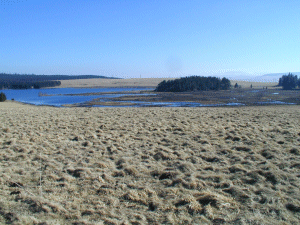
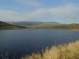

|
Entre Monts Dôres et Cantal, le
Cézallier nous offre ses grands espaces de
pâturages et de tourbières.
Le Cézallier est en partie dans le
département du Cantal, la Godivelle étant en
limite du Puy de Dôme et une des communes les moins
peuplées de ce département. Le climat est rude
sur ce plateau volcanique élevé... mais on
respire bien là haut ! En hiver : ski de fond... en
été : randonnée !
Ici bien des vaches viennent en "estive". Pour
voir quelques unes des différentes races
rencontrées, cliquez ici.
|

Entre La Godivelle et Boutaresse, les
salers profitent de l'herbe abondante. Les
narcisses blanchissent les prés.
|

Début juin "compagnons rouges" et
myosotis décorent les talus.
Les gentianes
poussent en altitude et les pavots
jaunes au bord des hêtraies.
|
|

La cascade du Saillant.
Après avoir flané sur la
coulée basaltique le ruisseau franchit le
front de coulée en une superbe cascade.
|

Le Lac d'Anglard est en limite des Monts
Dores, au bord du Cézallier.
C'est un lac de tourbière dont la
surface diminue d'année en année.
L'herbe est grise en fin d'hiver !
Vers le lac de
Roche Orcine cliquez !
N'oubliez pas
de fermer le popup pour continuer.
|
Si vous êtes
entré directement : entrée du site ici
|